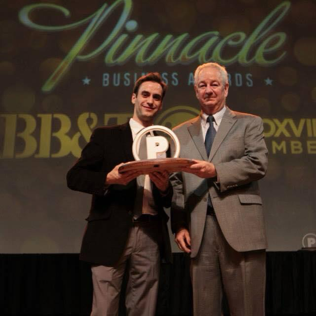
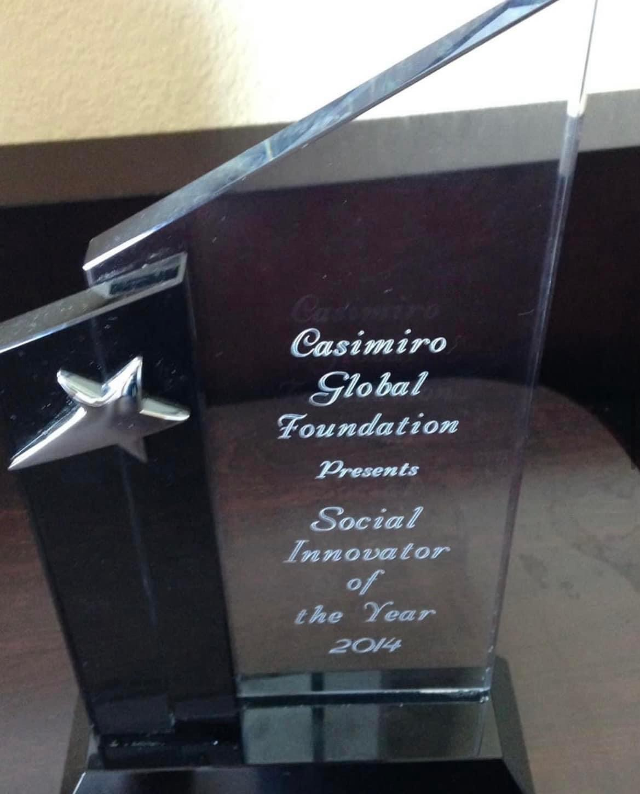
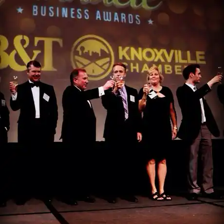
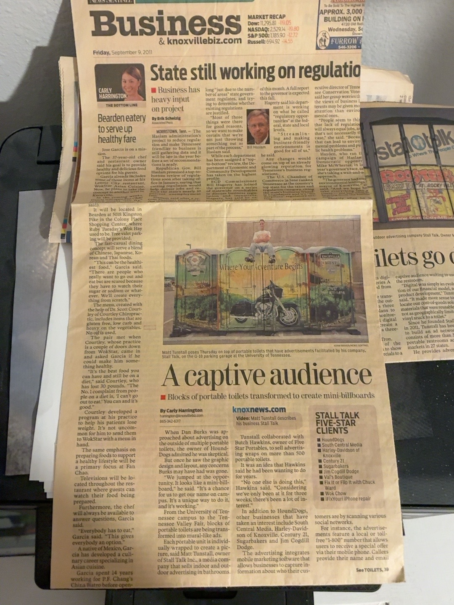
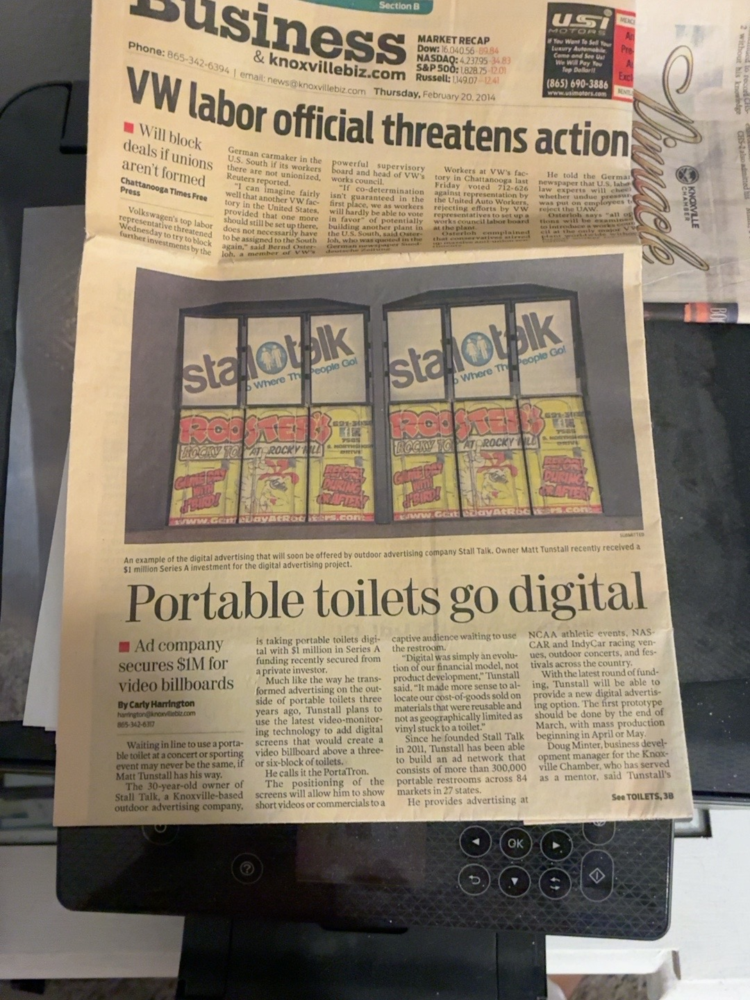
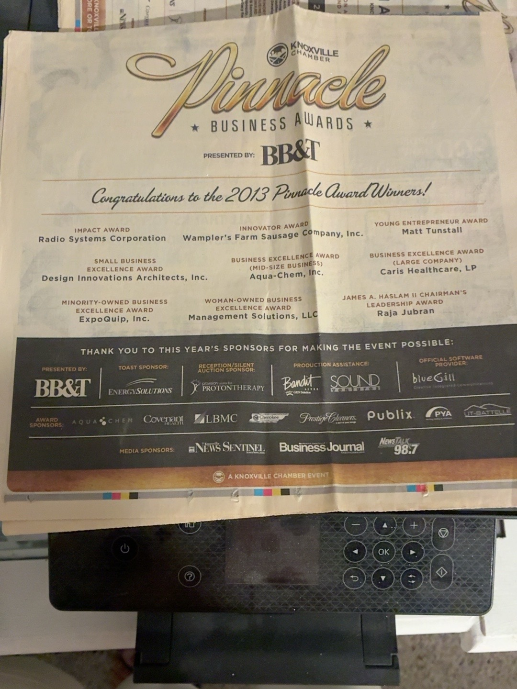

Advertising & media
Stall Talk
Created an unconventional event advertising concept, documented in local press and recognized by the Knoxville Chamber.
See the Stall Talk story ↗Entrepreneur · Creative strategist · Builder
I turn unconventional ideas into businesses, campaigns and working projects. My background spans more than two decades of advertising, sales, event operations, product development and entrepreneurship — from Stall Talk to newer ventures in software and modular construction.
Founder of United Painters Worldwide · Convention Construction Specialist at Freeman Expositions · Knoxville Chamber's 2013 Pinnacle Young Entrepreneur Award recipient

A sampling of ventures and professional work — with a clear distinction between established operations and projects in development.
Created an unconventional event advertising concept, documented in local press and recognized by the Knoxville Chamber.
See the Stall Talk story ↗Built a painting business focused on sales, customer relationships, contractor recruiting and project coordination.
Explore commercial experience ↗Developing local-first software that helps families organize memories and build personal documentary stories.
Explore the software concept ↗Also featured: Freeman Expositions, Box Chairs, Perfect Dream Modular and RecordPathAI.
View all seven selected project stories ↗THE PRICE IS A GAMBLE. YOUR RIDE ISN'T.
A Las Vegas mountain-day transportation concept featuring Lee Canyon and trip inquiries for Brian Head and Arizona Snowbowl. Explore destination guides, mountain forecasts, and availability requests.
Explore the shuttle website ↗Trips and pickup arrangements are subject to availability and confirmation.Browse the documented milestones alongside the creative work, professional career and developing projects.
I’m a Las Vegas-based entrepreneur with more than two decades of work spanning advertising, business development, hands-on event operations and new product creation. I earned a communications degree from the University of Tennessee and built my career at the intersection of creativity, sales, people and execution.
From launching Stall Talk and creating branded event products to leading United Painters Worldwide and working on convention floors with Freeman, I’ve learned how to move between a big idea and the operational details that bring it to life.
Read my complete biography, education and professional background ↗
My professional experience includes founding companies, managing people and projects, developing advertising concepts and helping deliver complex live-event installations.
Freeman Expositions
Convention setup, freight, carpeting, equipment operations and event logistics at major Las Vegas venues.
United Painters Worldwide
Commercial and residential painting, recruiting and coordinating crews, customer relations and project execution across multiple markets.
Advertising · Products · Technology
Development of Stall Talk, Box Chairs, Outdoor Events Association and newer ventures in software and modular construction.
From the 2013 Pinnacle Young Entrepreneur Award to the 2014 Social Innovator of the Year honor, my work has been recognized for developing ideas into businesses.
My most recent award featured here: the Casimiro Global Foundation's 2014 Social Innovator of the Year recognition. The original engraved award is pictured alongside this achievement.

The Knoxville Chamber named me its 2013 Young Entrepreneur Award recipient for my work with Stall Talk. The award is documented in the Chamber's official winners archive.

A timeline of entrepreneurship and innovation, with my latest listed honor from 2014 presented first. Where original award announcements have not yet been located, those distinctions are identified accordingly.
2014 Social Innovator of the Year recognition from the Casimiro Global Foundation. See the original trophy photograph in the featured recognition section above.
Award photograph featured aboveRecipient of the Knoxville Chamber's 2013 Young Entrepreneur Award for work with Stall Talk.
Independently documentedStall Talk received recognition at the 2012 Tennessee Governor’s Innovation Conference and won the Digital Media & Entertainment track of the statewide innovation competition, documented in Launch Tennessee’s 2012 Innovation Report.
Video and report availableRecognition listed in my professional honors history. Original competition records are being collected.
Reported professional honorRecognition listed in my professional honors history. Original competition records are being collected.
Reported professional honorPlatinum Company designation listed in my professional honors history; independent recipient documentation is still being sought.
Reported professional honorTech 2020 and the East Tennessee Technology Council were connected organizations in the region's entrepreneurial ecosystem. A distinct East Tennessee Technology Council award has not yet been independently verified, so it is not listed as a separate award.
Local news coverage captured the early evolution of Stall Talk, from outdoor advertising installations to proposed digital video displays. These are archival photographs of the original newspaper coverage.

Coverage of branded portable-restroom advertising, including an image of a Stall Talk installation.
View archival clipping ↗
A contemporary report about plans to expand the advertising format using digital displays and reported investment funding.
View archival clipping ↗
The printed announcement names Matt Tunstall as the Young Entrepreneur Award winner.
Official winners archive ↗Archival clippings are reproduced here for review in this draft website. Confirm publication rights or replace with authorized excerpts/links before going live.
News segments, interviews and event footage documenting the development of Stall Talk and entrepreneurial recognition.
From advertising and event products to painting services, modular structures, and legal technology, these nine ventures reflect my ongoing work in entrepreneurship and product development.
The original venture that transformed portable restrooms into branded advertising spaces at events, with concepts extending into digital displays.
Watch University of Tennessee promotional video ↗OutdoorEvents.us is a patent-pending advertising platform that automates media planning, media buying, media production, and brand activation for experiential marketing campaigns.
Watch Outdoor Events Association promotional video ↗Portable, branded corrugated seating designed for trade shows, sporting events, concerts, and promotional activations.
Watch Box Chairs promotional video ↗Painting project management and contractor coordination for commercial and residential projects across multiple U.S. markets.
Visit UnitedPaintersWW.com ↗Modular and container-based structures for housing, hospitality, commercial spaces, and other adaptable applications.
Visit PDmodular.com ↗A QR-powered restroom media network connecting venue visitors with local offers, updates, and advertising through venue-specific digital content.
Visit PottyFavor.com ↗A technology venture focused on simplifying record sealing and expungement workflows, from eligibility screening to document preparation.
Visit RecordPathAI.com ↗A privacy-first, cross-platform personal storytelling and documentary software venture. The Windows development beta now includes local photo/video importing, guided storytelling, AI-assisted documentary scene planning, and experimental MP4 rendering; native Apple builds have passed compilation and Android is in source-beta development. A free Windows beta trial is available by request, with proposed one-time launch editions.
Visit MemoryStudio.tv ↗ Request free Windows beta trial ↗From the Las Vegas Strip to the slopes. A mountain-day transportation venture centered on Lee Canyon, with longer-distance inquiries for Brian Head and Arizona Snowbowl. The new site features destination and local-attraction guides, mountain weather forecasts, and a simple availability-request flow. All trips require confirmation.
Visit Vegas Ski Shuttle ↗For business development, brand partnerships, media, venture conversations or speaking inquiries, let’s connect.